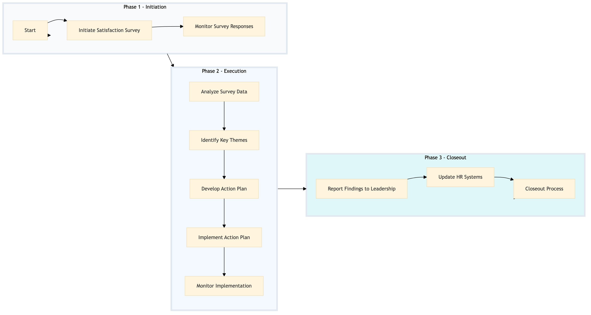

| Role | Steps |
|---|---|
| Human Resources Manager | 1.1 1.2 2.1 2.2 3.1 3.2 3.3 3.4 3.5 3.6 |
| Data Analyst | 2.1 |
| Executive Housekeeper | 3.4 |
| Step | Name | Role | System | Input | Output | KPI | Dec? | Exc? | Pain Point / Risk |
|---|---|---|---|---|---|---|---|---|---|
| 1.1 | Initiate Satisfaction Survey | Human Resources Manager | Oracle OPERA Cloud | Survey questions and distribution list | Launched survey | Less than 24 hours to launch | N | Y | Ensuring the survey reaches all associates |
| 1.2 | Monitor Survey Responses | Human Resources Manager | Oracle OPERA Cloud | Survey responses | Response count and status | Real-time monitoring | N | Y | Handling low response rates |
| 2.1 | Analyze Survey Data | Data Analyst | Microsoft Power BI | Survey responses | Analysis report | Within 48 hours of survey closure | N | Y | Data quality and completeness |
| 2.2 | Identify Key Themes | Human Resources Manager | Microsoft Power BI | Analysis report | Key themes document | Within 24 hours of analysis completion | N | Y | Interpreting complex data |
| 3.1 | Develop Action Plan | Human Resources Manager | Workday HCM | Key themes document | Action plan | Within 7 days of report completion | N | Y | Aligning actions with HR strategies |
| 3.2 | Implement Action Plan | Human Resources Manager | Workday HCM | Action plan | Implemented initiatives | Within 1 month of action plan approval | N | Y | Resource allocation and execution |
| 3.3 | Monitor Implementation | Human Resources Manager | Oracle OPERA Cloud | Implemented initiatives | Implementation status report | Monthly monitoring | N | Y | Tracking progress and effectiveness |
| 3.4 | Report Findings to Leadership | Executive Housekeeper | Microsoft Power BI | Implementation status report | Presentation to leadership | Within 1 week of monitoring completion | N | Y | Communicating complex findings |
| 3.5 | Update HR Systems | Human Resources Manager | Workday HCM | Action plan and implementation status | Updated HR records | Within 2 weeks of presentation | N | Y | Maintaining accurate HR data |
| 3.6 | Closeout Process | Human Resources Manager | Oracle OPERA Cloud | Final reports and documentation | Closed process record | Within 1 week of updating HR systems | N | Y | Completing all necessary paperwork |
The process involves collecting and reporting associate satisfaction scores to improve employee wellbeing and engagement at a full-service Marriott hotel.